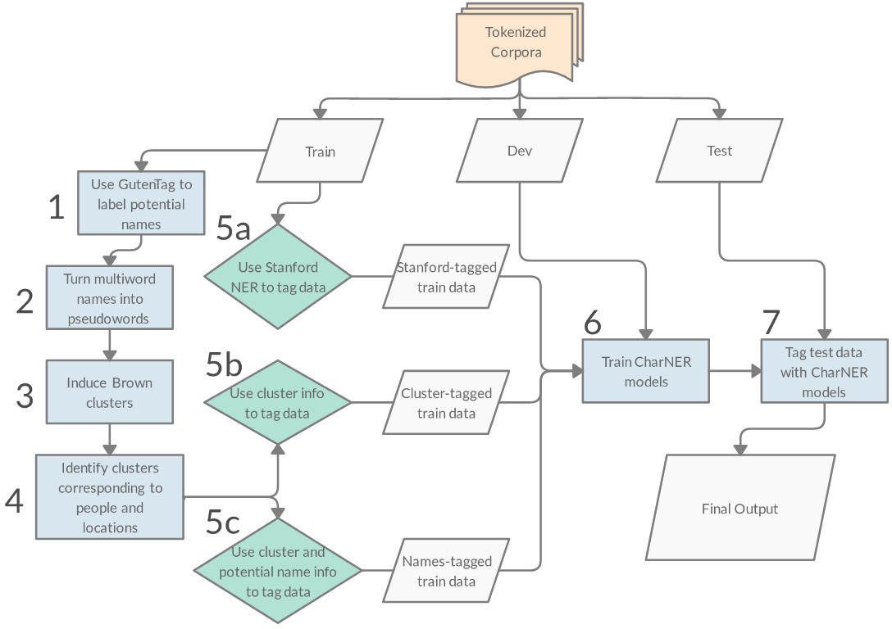

Bootstrapping Labeled Training Data for Named Entity Recognition on Early Modern English Letters
Supervised machine learning requires large amounts of labeled training data which is often lacking for less-researched domains of data. I investigated how such data could be bootstrapped in the absence of human-annotated data for a corpus of letters written in Early Modern English. Early Modern English, while intelligible to speakers in the present day, is sufficiently different from the English used today such that pretrained model performance suffers significantly on my corpus. I used one such model (trained with the Stanford Named Entity Recognizer) as a baseline against which to compare my system. For all methods of bootstrapping I use the data to train the character-level bidirectional long short term memory neural network for named entity recognition of Kuru, Can & Yuret (2016).
One method of bootstrapping I experimented with follows Brooke, Hammond & Baldwin (2016) and corresponds to Steps 1-5c in the diagram. In Step 1, the GutenTag tool (Brooke et al., 2016) finds potential names by leveraging capitalization patterns as well other heuristic methods such as common intervening words in names. Once these potential names are identified, Step 2 begins and multiword names are made into pseudowords in anticipation of the next step. In Step 3 I induce Brown clusters (Mikolov et al., 2013) using the tool of Liang (2005). The number of clusters is set to 50 to correspond to the approximate size of the Penn Treebank (Marcus et al., 1993) tagset. In Step 4 the clusters corresponding to people and locations are identified, and the words belonging to those clusters are used as seed lists for the subsequent tagging of the training data.
The other method of bootstrapping training examples I explored was inspired by Mac Kim and Cassidy (2015) and is Step 5a in the diagram. Here I use the pretrained Stanford Named Entity Recognizer to label the data and use this output as the training data for my model. This latter method of bootstrapping performed best, increasing the F1 by over 40 points over the baseline.
- Brooke, J., Hammond, A., & Baldwin, T. (2016). Bootstrapped Text-level Named Entity Recognition for Literature. In Proceedings of the 54th Annual Meeting of the Association for Computational Linguistics (Volume 2: Short Papers) (pp. 344–350). Association for Computational Linguistics.
- Kuru, O., Can, O., & Yuret, D. (2016). CharNER: Character-Level Named Entity Recognition. In Proceedings of COLING 2016, the 26th International Conference on Computational Linguistics: Technical Papers (pp. 911–921). The COLING 2016 Organizing Committee.
- Liang, P. Semi-supervised learning for natural language. PhD thesis, Massachusetts Institute of Technology, 2005.
- Mac Kim, S. and Cassidy, S. (2015) Finding names in trove: named entity recognition for Australian historical newspapers. In Proceedings of the Australasian Language Technology Association Workshop 2015 (pp. 57–65).
- Marcus, M., Santorini, B., & Marcinkiewicz, M. (1993). Building a Large Annotated Corpus of English: The Penn Treebank. Computational Linguistics, 19(2), 313–330.
- Mikolov, T., Sutskever, I., Chen, K., Corrado, G., & Dean, J. (2013). Distributed Representations of Words and Phrases and their Compositionality. In Advances in Neural Information Processing Systems. Curran Associates, Inc.